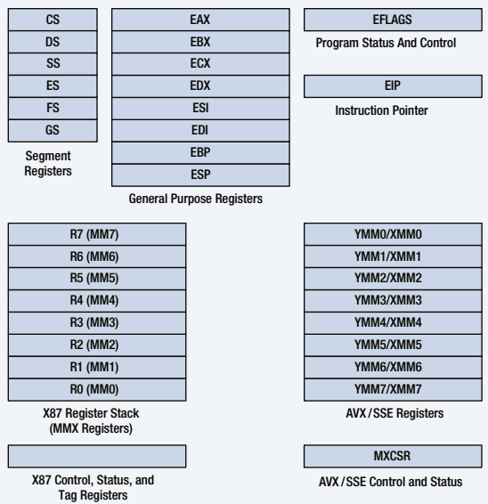
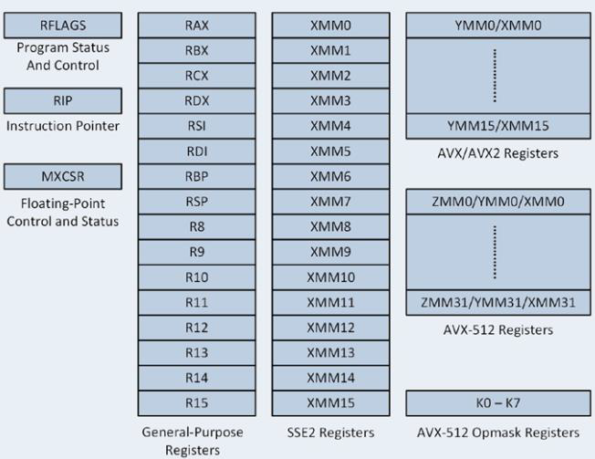
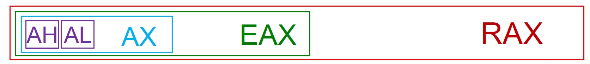
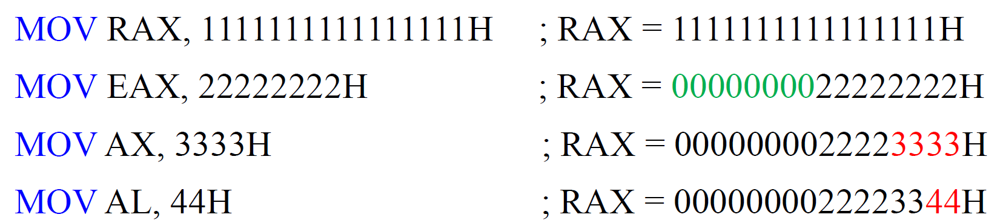
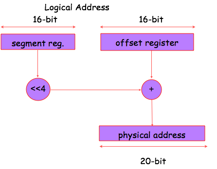
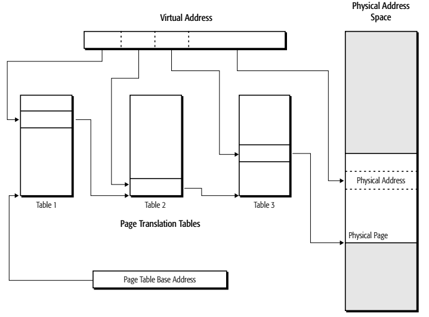
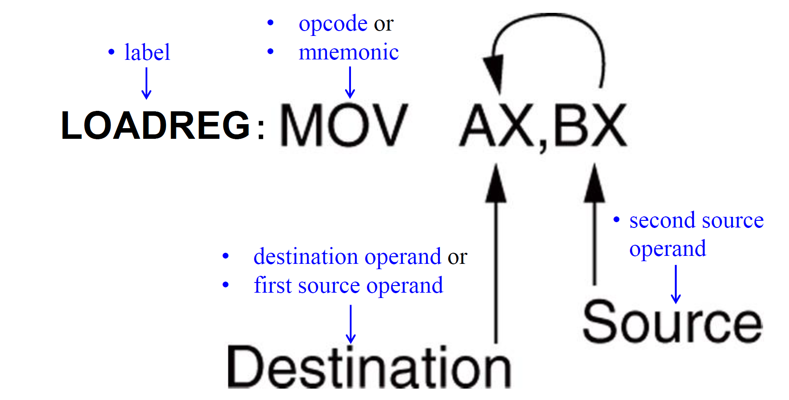
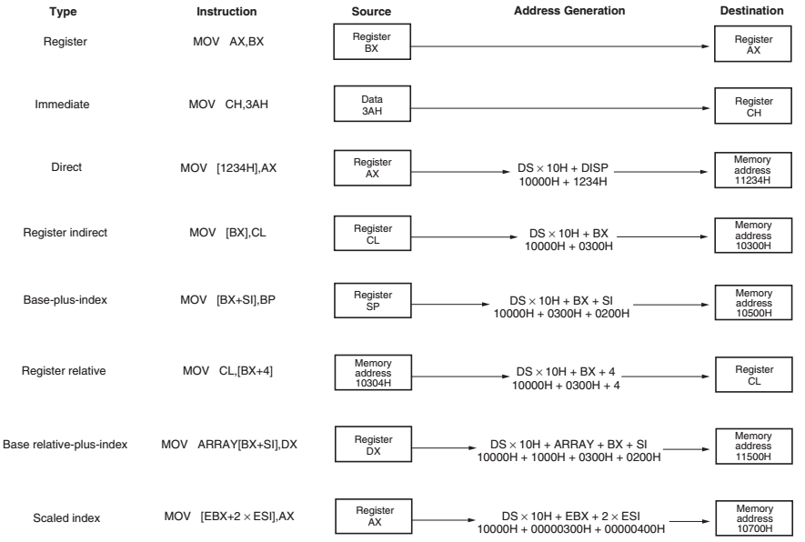

汇编与接口
Chapter 2
IA-32 Basic Executuion Environment

64-Bit Mode Execution Environment

General-Purpose Registers
RAX - a 64-bit register (RAX), a 32-bit register (accumulator) (EAX), a 16-bit register (AX), or as either of two 8-bit registers (AH and AL).

memory protection but may cause false dependence
RBX, addressable as RBX, EBX, BX, BH, BL.
BX register (base index) sometimes holds offset address of a location in the memory system in all versions of the microprocessor
RCX, as RCX, ECX, CX, CH, or CL.
a (count) general-purpose register that also holds the count for various instructions
RDX, as RDX, EDX, DX, DH, or DL.
a (data) general-purpose register
holds a part of the result from a multiplication or part of dividend before a division
RBP, as RBP, EBP, or BP.
points to a memory (base pointer) location for memory data transfers • RDI addressable as RDI, EDI, or DI. often addresses (destination index) string destination data for the string instructions
RSI used as RSI, ESI, or SI.
the (source index) register addresses source string data for the string instructions
like RDI, RSI also functions as a general- purpose register
R8 - R15 found in the Pentium 4 and Core2 if 64-bit extensions are enabled. For most instructions, access to the extended GPRs requires a REX prefix.
In 64-bit mode, general-purpose registers include:
16 8-bit low-byte registers: AL, BL, CL, DL, SIL, DIL, BPL, SPL, R8B-R15B
4 8-bit high-byte registers: AH, BH, CH, DH, addressable only when no REX prefix is used
16 16-bit registers: AX, BX, CX, DX, DI, SI, BP, SP, R8W-R15W
16 32-bit registers: EAX, EBX, ECX, EDX, EDI, ESI, EBP, ESP, R8D-R15D
16 64-bit registers: RAX, RBX, RCX, RDX, RDI, RSI, RBP, RSP, R8-R15
Special-Purpose Registers
RIP addresses the next instruction in a section of memory.
defined as (instruction pointer) a code segment
RSP addresses an area of memory called the stack.
the (stack pointer) stores data through this pointer
RFLAGS indicate the condition of the microprocessor and control its operation.
Status Flags of the RFLAGS
C (bit 0): Carry flag holds the carry after addition or borrow after subtraction.
Z (bit 6): Zero flag shows that the result of an arithmetic or logic operation is zero.
S (bit 7): Sign flag holds the arithmetic sign of the result after an arithmetic or logic instruction executes.
O (bit 11): Overflow flag occurs when signed numbers are added or subtracted.
an overflow indicates the result has exceeded the capacity of the machine
P (bit 2): Parity flag is set if the least-significant byte of the result contains an even number of 1 bits; cleared otherwise (parity even PF=1; parity odd PF=0).
A (bit 4): Auxiliary carry holds the carry (half-carry) after addition or the borrow after BCD operations between bit positions 3 and 4 of the result
D (direction) selects increment or decrement mode for the DI and/or SI registers.
System Flags of the RFLAGS
T (trap) The trap flag enables trapping through an on-chip debugging feature.
I (interrupt) controls operation of the INTR (interrupt request) input pin.
VM (virtual mode) flag bit selects virtual mode operation in a protected mode system.
IOPL used in protected mode operation to select the privilege level for I/O devices.
NT (nested task) flag indicates the current task is nested within another task in protected mode operation.
AC (alignment check) flag bit activates if a word or doubleword is addressed on a non-word or non-doubleword boundary.
RF (resume) used with debugging to control resumption of execution after the next instruction.
ID (identification) flag indicates that the Pentium microprocessors support the CPUID instruction.
CPUID instruction provides the system with information about the Pentium microprocessor
VIF is a copy of the interrupt flag bit available to the Pentium 4–(virtual interrupt)
VIP (virtual) provides information about a virtual mode interrupt for (interrupt pending) Pentium.
used in multitasking environments to provide virtual interrupt flags
Segment Registers
CS (code) segment holds code (programs and procedures) used by the microprocessor.
DS (data) contains most data used by a program.
Data are accessed by an offset address or contents of other registers that hold the offset address
ES (extra) an additional data segment used by some instructions to hold destination data.
......
Memory Managemnet Requirements
Relocation
logical address and physical address
Segmentation and Paging
Real Mode memeory addressing

2-6 Memory Paging
Effective addresses, or segment offsets
Logical addresses
Linear (virtual) addresses
Physical addresses

Chapter 3 – Addressing Modes
–16-bit modes (real, vm86, protected): default address and operand-size are 16-bit
–32-bit protected mode (protected): default address and operand-size are 32-bit
–64-bit mode: default address size is 64-bit, default operand-size is 32-bit
DATA ADDRESSING MODES

operands

immediate operand
If necessary, add a leading zero to distinguish between symbols and hexadecimal numbers that start with a letter. E.g., –MOV AX, F2H ；load a label named F2H –MOV AX, 0F2H ；load a hexadecimal F2H
MOV AX 'BX' - Copies ASCII BA into AX
Register operands
操作数宽度要一致
memory operand
Effective Address = Base + (Scale×Index) + Disp
Direct Data Addressing (Disp)
MOV AL, [1234H]
–Register Indirect Addressing (Base)
MOV AX, [BX]
–Base-Plus-Index Addressing (Base + Insdex)
MOV DX,[BX + DI]
–Register Relative Addressing (Base/Index + Disp)
–Base Relative-Plus-Index Addressing (Base + Index + Disp)
MOV AX, [BX + SI + 100H].
–Scaled-Index Addressing (Base+Scale+Index+Disp)